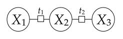

Owner CA: Amita Kamath
Version: 1
This (and every) assignment has a written part and a programming part.
The full assignment with our supporting code and scripts can be downloaded as scheduling.zip.
scheduling.pdf.submission.py.All written answers must be in order and clearly and correctly labeled to receive credit.
You should modify the code in submission.py between
# BEGIN_YOUR_CODEand
# END_YOUR_CODEbut you can add other helper functions outside this block if you want. Do not make changes to files other than
submission.py.Your code will be evaluated on two types of test cases, basic and hidden, which you can see in grader.py.
Basic tests, which are fully provided to you, do not stress your code
with large inputs or tricky corner cases. Hidden tests are more complex
and do stress your code. The inputs of hidden tests are provided in grader.py, but the correct outputs are not. To run the tests, you will need to have graderUtil.py in the same directory as your code and grader.py. Then, you can run all the tests by typing
python grader.pyThis will tell you only whether you passed the basic tests. On the hidden tests, the script will alert you if your code takes too long or crashes, but does not say whether you got the correct output. You can also run a single test (e.g.,
3a-0-basic) by typing python grader.py 3a-0-basicWe strongly encourage you to read and understand the test cases, create your own test cases, and not just blindly run
grader.py.
What courses should you take in a given quarter? Answering this question requires balancing your interests, satisfying prerequisite chains, graduation requirements, availability of courses; this can be a complex tedious process. In this assignment, you will write a program that does automatic course scheduling for you based on your preferences and constraints. The program will cast the course scheduling problem (CSP) as a constraint satisfaction problem (CSP) and then use backtracking search to solve that CSP to give you your optimal course schedule.
You will first get yourself familiar with the basics of CSPs in Problem 0.
In Problem 1, you will implement two of the three heuristics you learned from the
lectures that will make CSP solving much faster.
In problem 2, you will add a helper function to reduce
Your goal is to turn on all the light bulbs by pressing a subset of the buttons.
Construct a CSP to solve this problem.
Your CSP should have

wherebacktrack() be called to get all consistent assignments
if we use the fixed ordering backtrack().
(You should use the Backtrack algorithm from the slides.
The initial arguments are In the code, this will be BacktrackingSearch.numOperations.
backtrack().
| {[0,1], [0,1], [0,1]} | {0, [0,1], [0,1]} | {0, [0,1], 0} | {0, 1, 0} | |||
| {0, [0,1], 1} | ||||||
| {1, [0,1], [0,1]} | {1, [0,1], 0} | |||||
| {1, [0,1], 1} | {1, 0, 1} |
Note Backtrack is not called when there's an inconsistent partial assignment (
| {[0,1], [0,1], [0,1]} | {0, [1], [0]} | {0, [1], 0} | {0, 1, 0} | |||
| {1, [0], [1]} | {1, [0], 1} | {1, 0, 1} |
create_chain_csp() by creating a generic chain CSP with XOR as factors.
Note: We've provided you with a CSP implementation
in util.py which supports unary and binary factors. For
now, you don't need to understand the implementation, but please read the
comments and get yourself familiar with the CSP interface. For this
problem, you'll need to use CSP.add_variable() and
CSP.add_binary_factor().
So far, we've only worked with unweighted CSPs, where
For weighted CSP construction, you can refer to the CSP examples we have provided
in util.py for guidance (create_map_coloring_csp() and
create_weighted_csp()).
You can try these examples out by running
python run_p1.py
Notice we are already able to solve the CSPs because in submission.py,
a basic backtracking search is already implemented.
Recall that backtracking search operates over partial assignments
and associates each partial assignment with a weight, which is the product of all the factors
that depend only on the assigned variables.
When we assign a value to a new variable get_delta_weight() returns the contribution
of these new factors based on the unaryFactors and
binaryFactors.
An important case is when get_delta_weight() returns 0.
In this case, any full assignment that extends the new partial assignment will also be zero,
so there is no need to search further with that new partial assignment.
Take a look at BacktrackingSearch.reset_results() to see the other fields
which are set as a result of solving the weighted CSP.
You should read submission.BacktrackingSearch carefully to make
sure that you understand how the backtracking search is working on the CSP.
create_nqueens_csp() by
adding backtrack()).
Hint: If you get a larger number of operations, make sure your CSP is minimal. Try to define the variables such that the size of domain is O(n).
Note: Please implement the domain of variables as 'list' type in Python
(again, you may refer to create_map_coloring_csp() and
create_weighted_csp() in util.py as examples of CSP problem implementations),
so you can compare the number of operations with our suggestions as a way of debugging.
get_delta_weight() on get_unassigned_variable() under the condition self.mcv = True.
It should take you exactly 1361 operations to find all optimal assignments for 8 queens CSP — that's 30% fewer!
Some useful fields:
csp.unaryFactors[var][val] gives the unary factor value.csp.binaryFactors[var1][var2][val1][val2] gives the binary factor value. Here, var1 and var2 are variables and val1 and val2
are their corresponding values.BacktrackingSearch, if var has been assigned a value, you can retrieve it using assignment[var]. Otherwise var is not in assignment.backtrack() we've implemented code which copies and restores domains
for you. Your job is to fill in arc_consistency_check().
You should make sure that your existing MCV implementation is compatible with your AC-3 algorithm as we will be using all three heuristics together during grading.
With AC-3 enabled, it should take you 769 operations only to find all optimal assignments to 8 queens CSP — That is almost 45% fewer even compared with MCV!
Take a deep breath! This part requires time and effort to implement — be patient.
Hint 1: documentation for CSP.add_unary_factor() and
CSP.add_binary_factor() can be helpful.
Hint 2: although AC-3 works
recursively, you may implement it iteratively. Using a queue might be a good idea. li.pop(0) removes and returns the first element for a python list li.
So far, our CSP solver only handles unary and binary factors,
but for course scheduling (and really any non-trivial application),
we would like to define factors that involve more than two variables.
It would be nice if we could have a general way of reducing
Suppose we have boolean variables util.py, the function get_or_variable() does such a reduction.
It takes in a list of variables and a target value, and returns a boolean variable with
domain [True, False] whose value is constrained to the condition of having
at least one of the variables assigned to the target value.
For example, we would call get_or_variable() with
arguments
The second type of
Hint: draw inspiration from the example of enforcing
where
get_sum_variable(),
which takes in a sequence of non-negative integer-valued variables
and returns a variable whose value is constrained to equal the sum of the variables.
You will need to access the domains of the variables passed in,
which you can assume contain only non-negative integers.
The parameter maxSum is the maximum sum possible of all the variables.
You can use this information to decide the proper domains for your auxiliary variables.
How can this function be useful? Suppose we wanted to enforce the constraint get_sum_variable() on
In this problem, we will apply your weighted CSP solver to the problem of course
scheduling.
We have scraped a subset of courses that are offered from Stanford's
Bulletin. For each course in this dataset,
we have information on which quarters it is offered,
the prerequisites (which may not be fully accurate due to
ambiguity in the listing), and the range of units allowed.
You can take a look at all the courses in courses.json.
Please refer to
util.Course and util.CourseBulletin for more information.
To specify a desired course plan, you would need to provide a profile
which specifies your constraints and preferences for courses.
A profile is specified in a text file (see profile*.txt for examples).
The profile file has four sections:
minUnits 0 maxUnits 3
register for the quarters that you want
to take your courses in. For example,
register Aut2018 register Win2019 register Spr2019would sign you up for this academic year. The quarters need not be contiguous, but they must follow the exact format
XxxYYYY where Xxx is one of Aut, Win, Spr, Sum
and YYYY is the year.
taken keyword.
For example, if you're in CS221, this is probably what you would put:
taken CS103 taken CS106B taken CS107 taken CS109
request.
For example, two basic requests would look like this:
request CS224N request CS229Not every request must be fulfilled, and indeed, due to the additional constraints described below, it is possible that not all of them can actually be fulfilled.
Constrained requests. To allow for more flexibility in your preferences, we allow some freedom to customize the requests:
request CS229 or CS229A or CS229T
Note that these courses do not necessarily have to be offered in the same quarter. The final schedule can have at most one of these three courses. Each course can only be requested at most once.
If you want to take a course in one of a specified set of quarters, use the
in modifier.
For example, if you want to take one of CS221 or CS229 in either Aut2018 or Sum2019, do:
request CS221 or CS229 in Aut2018,Sum2019
If you do not specify any quarters, then the course can be taken in any quarter.
after, which specifies
that a course must be taken after another one.
For example, if you want to choose one of CS221 or CS229 and take it after both CS109 and CS161, add:
request CS221 or CS229 after CS109,CS161Note that this implies that if you take CS221 or CS229, then you must take both CS109 and CS161. In this case, we say that CS109 and CS161 are
prereqs of this request.
(Note that there's no space after the comma.)
If you request
course A and B (separately), and A is an official prerequisite of B based on
the CourseBulletin,
we will automatically add A as a prerequisite for B; that is,
typing request B is equivalent to request B after A.
Note that if B is a prerequisite of A, to request A,
you must either request B or declare you've taken B before.
Finally, the last operator you can add is weight, which adds
non-negative weight to each request. All requests have a default weight value of 1.
Requests with higher weight should be preferred by your
CSP solver. Note that you can combine all of the aforementioned operators into
one as follows (again, no space after comma):
request CS221 or CS229 in Win2018,Win2019 after CS131 weight 5
Each request line in your profile is represented in code
as an instance of the Request class (see util.py).
For example, the request above would have the following fields:
cids (course IDs that you're choosing one of) with value ['CS221', 'CS229']quarters (that you're allowed to take the courses) with value ['Win2018', 'Win2019']prereqs (course IDs that you must take before) with value ['CS131']weight (preference) with value 5.0
It's important to note that a request does not have to be fulfilled,
but if it is,
the constraints specified by the various operators after,in must
also be satisfied.
You shall not worry about parsing the profiles because
we have done all the parsing of the bulletin and profile for you,
so all you need to work with is the collection of Request
objects in Profile and CourseBulletin
to know when courses are offered and the number of units of courses.
import util
# load bulletin
bulletin = util.CourseBulletin('courses.json')
# retrieve information of CS221
cs221 = bulletin.courses['CS221']
print cs221
# look at various properties of the course
print cs221.cid
print cs221.minUnits
print cs221.maxUnits
print cs221.prereqs # the prerequisites
print cs221.is_offered_in('Aut2018')
print cs221.is_offered_in('Win2019')
# load profile from profile_example.txt
profile = util.Profile(bulletin, 'profile_example.txt')
# see what it's about
profile.print_info()
# iterate over the requests and print out the properties
for request in profile.requests:
print request.cids, request.quarters, request.prereqs, request.weight
Solving the CSP.
Your task is to take a profile and bulletin and construct a CSP.
We have started you off with code in SchedulingCSPConstructor
that constructs the core variables of the CSP as well as some basic constraints.
The variables are all pairs of requests and registered quarters (request, quarter),
and the value of such a variable is one of the course IDs in that Request
or None, which indicates none of the courses should be taken in that
quarter. We will add auxiliary variables later.
We have also implemented some basic constraints:
add_bulletin_constraints(), which enforces that a course can only be
taken if it's offered in that quarter (according to the bulletin), and
add_norepeating_constraints(),
which constrains that no course can be taken more than once.
You should take a look at add_bulletin_constraints() and
add_norepeating_constraints() to get a basic understanding
how the CSP for scheduling is represented. Nevertheless, we'll highlight
some important details to make it easier for you to implement:
(request, quarter)
where request is a Request object
(like the one shown above)
and quarter is a str representing a quarter
(e.g. 'Aut2018'). For detail please look at
SchedulingCSPConstructor.add_variables().
(request, quarter) is the course IDs of the request
plus None (e.g. ['CS221',
'CS229', None]).
When the value cid is
None, this means no course is scheduled for this request.
Always remember to check if cid is
None.
quarter is all possible quarters
(self.profile.quarters, e.g. ['Win2016', 'Win2017']).
cid, you can get the corresponding
Course object by self.bulletin.courses[cid].add_quarter_constraints() in submission.py. This is when your
profile specifies which quarter(s) you want your requested courses to be taken in.
This is not saying that one of the courses must be taken,
but if it is, then it must be taken in any one of the specified quarters.
Also note that this constraint will apply to all courses in that request.
We have written a verify_schedule()
function in grader.py that determines if your schedule satisfies all
of the given constraints. Note that since we are not dealing with units yet, it
will print None for the number of units of each course.
For profile3a.txt, you should find 3 optimal assignments with weight 1.0.
add_unit_constraints().
(1) You must ensure that the sum of units per quarter for your schedule are within
the min and max threshold inclusive.
You should use get_sum_variable().
(2) In order for our solution extractor to
obtain the number of units, for every course,
you must add a variable (courseId, quarter)
to the CSP taking on a value equal to the number of units being taken for that
course during that quarter. When the course is not taken during that quarter,
the unit should be 0.
NOTE: Each grader test only tests the function you are asked to
implement. To test your CSP with multiple constraints you can use
run_p3.py and add whichever constraints that you want to add.
For profile3b.txt, you should find 15 optimal assignments with weight 1.0.
Hint: If your code times out, your maxSum passed
to get_sum_variable() might be too large.
profile.txt and then run the course scheduler:
python run_p3.py profile.txtYou might want to turn on the appropriate heuristic flags to speed up the computation. Does it produce a reasonable course schedule? Please include your
profile.txt and the best schedule in your writeup;
we're curious how it worked out for you!
Want more challenges about CSP? Here we go. :D
Suppose we have a weighted CSP with variables
Let
For example, suppose
Note: Reduction of
Preprocessing: first we create a trie of all possible prefixes
of the patterns. This trie can be constructed efficiently using
Aho-Corasick algorithm
in
State: we define the state as
Transition: for each
With the states and transitions defined, we can use dynamic programming to compute the maximum weight
assignment in